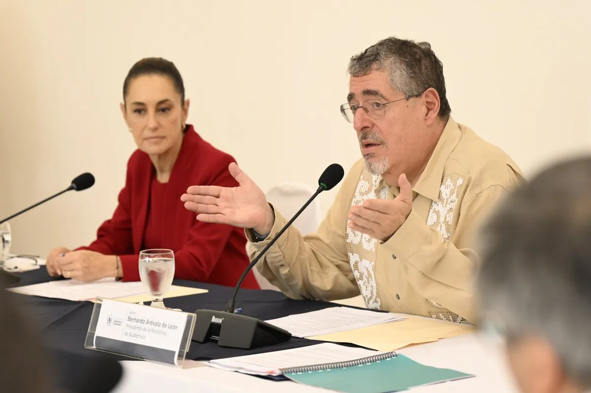

OKpolítico
OKpolíticoNoticias actuales
Esta sección está disponible para tu marca →


Opinión | Detienen en Colombia a juez acusado de recibir 2 millones de dólares
La Fiscalía de Estados Unidos acusa al juez federal Luis Benítez Alcántara de recibir dos millones de dólares para liberar a Andrew Clark, según el Departamento de Justicia citado
6 de noviembre de 2026
Comisión de Diputados aprueba gasto de 10.6 billones para 2027
La Comisión de Presupuesto y Cuenta Pública de la Cámara de Diputados aprobó en lo general el PEF 2027, con un gasto de 10 billones 636 mil millones de pesos. Votaron 33 a favor y
6 de noviembre de 2026
5 cosas de la mañanera del viernes 6 de noviembre
Resumen de la conferencia matutina de la presidenta Claudia Sheinbaum del viernes 6 de noviembre de 2026. Planteó que el presupuesto electoral probablemente está inflado, anunció u
6 de noviembre de 2026
Banxico sorprende y baja la tasa de interés a 6.25% con tres votos contra dos
Banxico recortó 25 puntos base su tasa de referencia, de 6.50% a 6.25%, con tres votos a favor y dos en contra. El banco central dice que mantener la tasa por tiempo prolongado apo
5 de noviembre de 2026
5 cosas de la mañanera del jueves 5 de noviembre
Resumen de la mañanera del 5 de noviembre de 2026. La Secretaría de Anticorrupción y Buen Gobierno presentó una investigación sobre contratos de los hermanos Hernández Casillas con
5 de noviembre de 20265 cosas de la mañanera del miércoles 4 de noviembre
En la mañanera del miércoles 4 de noviembre de 2026, la presidenta Claudia Sheinbaum cuestionó la autoridad moral de Luis Carlos Ugalde, expresidente del IFE (2003-2007), a quien r
5 de noviembre de 2026
6 cosas de la mañanera del miércoles 4 de noviembre
Resumen de la conferencia matutina del miércoles 4 de noviembre de 2026: balance del plan Michoacán, acuerdo para reanudar la exportación de aguacate, cuestionamiento de Sheinbaum
5 de noviembre de 2026

5 cosas de la mañanera del martes 3 de noviembre
Resumen de la conferencia matutina del martes 3 de noviembre de 2026. Se presentaron los planes de acción para el ISSSTE e IMSS, posturas sobre el INE, investigaciones por desvío d
4 de noviembre de 2026
IEEPCO otorgó adjudicaciones directas por más de 190 millones de pesos
Investigaciones de la ASF y la UIF señalan adjudicaciones directas millonarias en el IEEPCO a empresas bajo escrutinio federal. Fuentes: El Universal, El Financiero y Dossier Polít
3 de noviembre de 2026
Desempleo por estado: Ciudad de México 4.2%, sector informal: Oaxaca 43.2%
Mapa del empleo en México con datos del INEGI, 2.º trimestre 2026.
3 de noviembre de 2026